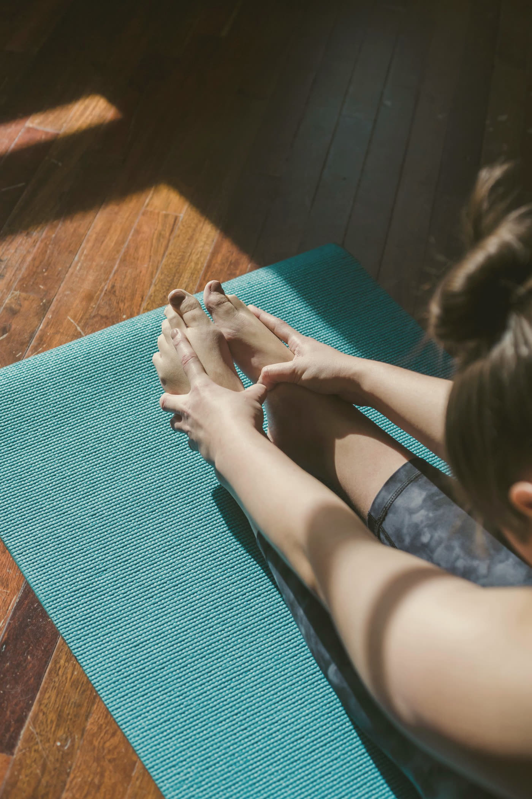

Bewegen en afvallen
Waarom bewegen zo belangrijk is als je afvalt, hoeveel genoeg is en drie makkelijke oefeningen voor thuis. Extra belangrijk na je 50e.
Waarom bewegen helpt
Met alleen bewegen val je niet snel af: wat je met een wandeling verbrandt, eet je met een tussendoortje zo weer op. Toch is bewegen heel belangrijk als je afvalt, om drie redenen:
- Je houdt je spieren. Wie afvalt zonder te bewegen, raakt ook spieren kwijt.
- Je houdt je gewicht beter vast. Volgens het Voedingscentrum val je op de lange termijn het meest af als je minder eet én meer beweegt.
- Je voelt je beter. Bewegen helpt tegen stress en je slaapt er beter door.
Hoeveel bewegen is gezond?
De Gezondheidsraad heeft de Beweegrichtlijnen opgesteld. Voor volwassenen is het advies:
Matig intensief betekent: je hartslag en ademhaling gaan omhoog, maar je kunt nog wel praten. Denk aan stevig wandelen, fietsen, zwemmen of tuinieren. Verspreid het over de week, bijvoorbeeld 5 keer een half uur. En voorkom veel stilzitten: sta regelmatig even op.

Na je 50e: spieren zijn extra belangrijk
Vanaf ongeveer je dertigste neemt je spiermassa langzaam af. Na je vijftigste gaat dat sneller. Minder spieren betekent minder kracht, maar ook dat je lichaam minder energie verbruikt. Daardoor kom je makkelijker aan.
Het goede nieuws: je kunt op elke leeftijd spieren opbouwen. Je hoeft er niet voor naar de sportschool.
3 oefeningen voor thuis
- Opstaan uit een stoel. Ga op een stevige stoel zitten, armen over elkaar. Sta op zonder je handen te gebruiken en ga weer rustig zitten. Doe dit 10 keer.
- Opdrukken tegen de muur. Ga een grote stap van de muur staan en zet je handen tegen de muur. Buig je armen en duw jezelf weer terug. Doe dit 10 keer.
- Op één been staan. Houd je vast aan een aanrecht of stoel. Til één voet op en blijf 20 tellen staan. Wissel van been. Dit is goed voor je balans.
Let op: begin rustig als je lang niet hebt bewogen. Heb je klachten aan je hart, rug of gewrichten? Vraag dan eerst je huisarts of fysiotherapeut wat goed voor je is.
Een week bewegen, zo kan het
| Maandag | 30 minuten wandelen |
|---|---|
| Dinsdag | De 3 oefeningen voor thuis |
| Woensdag | 30 minuten fietsen |
| Donderdag | Rust, of een kort rondje lopen |
| Vrijdag | 30 minuten wandelen, en de 3 oefeningen |
| Zaterdag | Een langere wandeling of tuinieren |
| Zondag | Yoga, qigong of rustig zwemmen |
Zo houd je het vol
- Doe het samen. Met een vriend of je partner sla je minder snel over.
- Maak het vast. Bijvoorbeeld elke ochtend na het ontbijt.
- Kies wat je leuk vindt. Dan is het geen straf.
- Pak de fiets voor korte ritjes in plaats van de auto.
Veelgestelde vragen
Telt huishoudelijk werk ook mee?
Ja, als je er een beetje van gaat hijgen. Stofzuigen, ramen lappen of tuinieren tellen mee.
Is yoga genoeg?
Yoga is goed voor je spieren, balans en lenigheid. Combineer het met wandelen of fietsen voor je conditie.
Ik ben nog nooit sportief geweest.
Dan is wandelen de beste start. Begin met 10 minuten per dag en doe er elke week een paar minuten bij.
Plannen voor bewegen naast elkaar
Wil je het niet alleen doen? Dit zijn de plannen voor bewegen. Kijk in de kolom Voor wie welke bij je past.
Je kiest bij de aanbieder. Via onze links krijgen wij een kleine vergoeding (#ad), jij betaalt niets extra.


Bronnen: Gezondheidsraad: Beweegrichtlijnen 2017 en Voedingscentrum: afvallen.